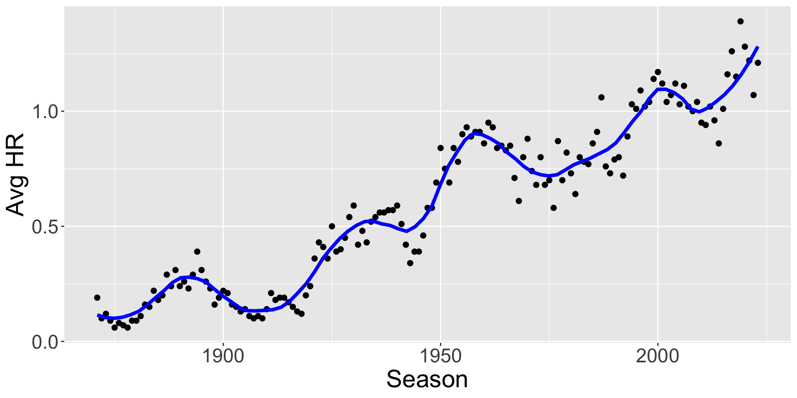
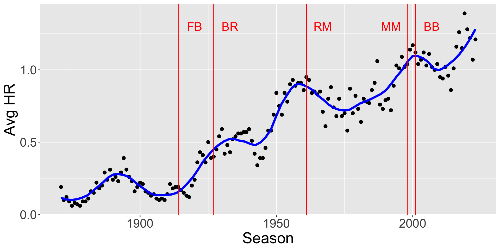
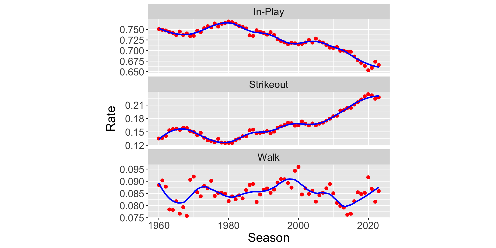
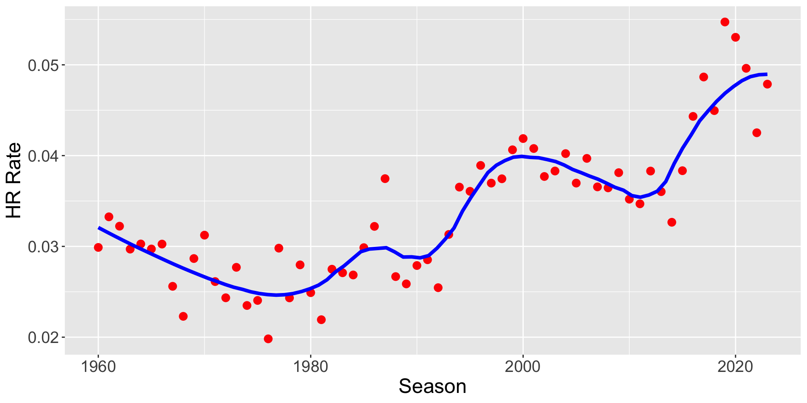
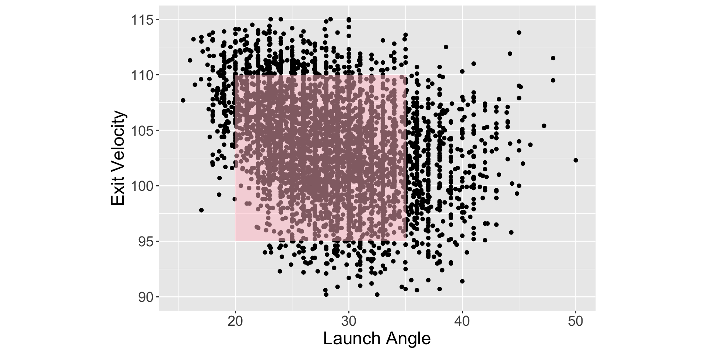
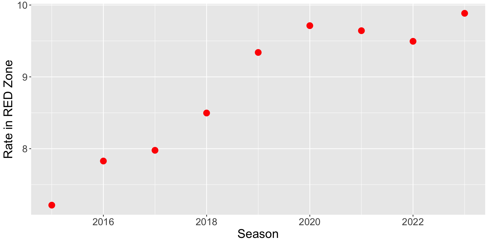
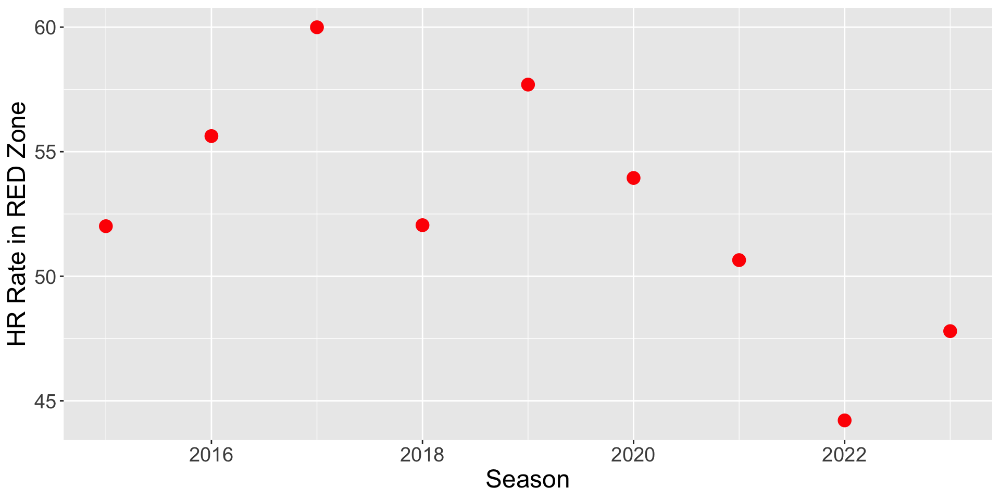
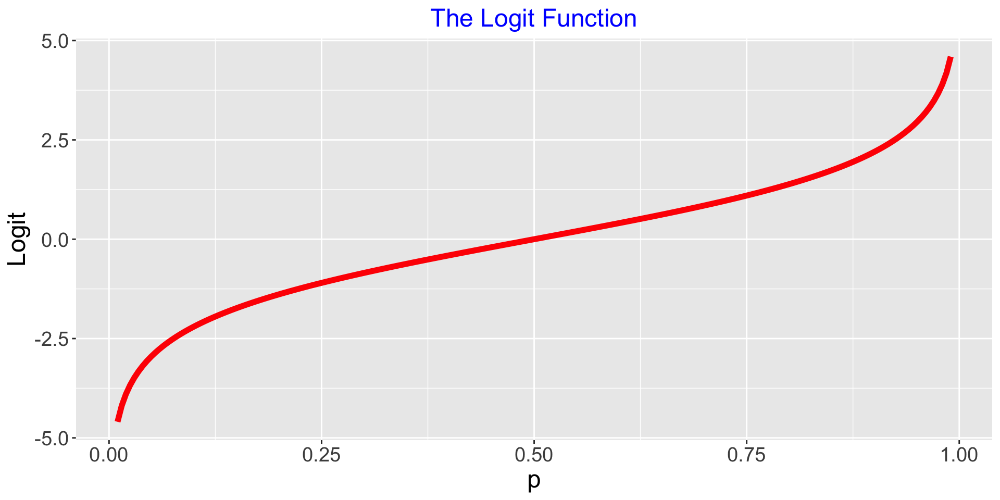
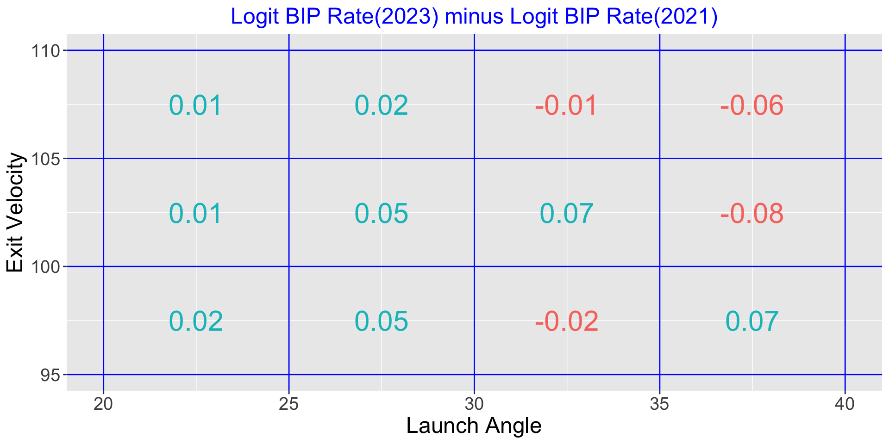
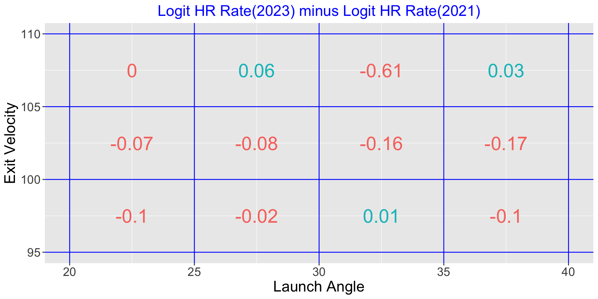

| Season | Home Runs |
|---|---|
| 2015 | 4909 |
| 2016 | 5610 |
| 2017 | 6105 |
| 2018 | 5585 |
| 2019 | 6776 |
| 2021 | 5944 |
| 2022 | 5215 |
| 2023 | 5868 |
Home Run Hitting
Jim Albert
Introduction
Historical View of Home Runs
Baseball Reference provides the average number of Home Runs, Hits, Runs for each team each game during all seasons of Major League Baseball (1871 through 2023)
Home Run hitting has gone through many changes in MLB History
Avg HR Hit Per Team Per Game
Seasons of Famous HR Hitters
Some Famous HR Seasons
- Frank (Home Run) Baker (1914)
- Babe Ruth (1927)
- Roger Maris (1961)
- Mark McGwire (1998)
- Barry Bonds (2001)
Home Run Baker

- Played during Deadball Era
- Was home run leader in 1914 with 9 HR
- Home runs were not a big part of the game
Babe Ruth

- With Babe, home runs became a big part of baseball
- Was home run leader in 1927 with 60 HR
- Maybe the greatest player of all time
Roger Maris

- Broke Ruth’s record with 61 HR in 1961
- Played with Mickey Mantle
- Some controversy with record (famous asterisk)
Mark McGwire

- Played during “Steroids Era”
- Competed with Sammy Sosa in 1998 for the HR crown
- Hit 70 to break the record
Barry Bonds

- Played during “Steroids Era”
- Broke the HR record with 73 in 2001
- Career HR leader with 762
HR Totals in the Statcast Era
A Plate Appearance
Three Basic Outcomes:
- Strikeout
- Walk
- Ball put into play
How have the rates of these three outcomes changed over the last 50 years of baseball?
History of In-Play, SO and BB Rates
History of Rates
SO Rates have been steadily increasing
In-Play Rates have been decreasing
Pattern of Walk Rates are less clear, show up and down movement
In-Play Rates
Define the home run rate as the fraction of \(HR\) among all batted balls (\(AB - SO\))\[ HR \, Rate = \frac{HR}{AB - SO} \]
Look at history of \(HR\) rates
History of HR Rates
What is Causing the Increase in Home Rate Rates?
MLB Committee
Fall of 2017 a committee was charged by Major League Baseball to identify the potential causes of the increase in the rate at which home runs were hit in 2015, 2016, and 2017.
Report was released in May 2018.
Possible Reasons for Increase in HRs
The batters?
- Changes in characteristics of batted balls
- Launch angle, exit velocity, and spray angle
The pitchers?
- Changes in types of pitches
- Pitch location
Possible Reasons for Increase in HRs
The ball?
- Changes in how the ball is made?
- Seam height, core?
- Drag coefficient?
Possible Reasons for Increase in HRs
Game conditions?
- Ballpark effect
- Weather
- Cold vs. hot temperatures
Process of Hitting a Ball
IN-PLAY: Have to put the ball in play
HIT IT RIGHT: The batted ball needs to have the “right” launch angle and exit velocity
REACH THE SEATS: Given the exit velocity and launch angle, needs to have sufficient distance and height to clear the fence (the carry of ball)
Committe’s Findings (2015-2017 Data)
- Found modest changes in launch angle and exit velocity among batters
- Focused on RED zone – launch angle in (15, 40) degrees, launch speed between 90 and 115 mpg
- The RED zone balls are showing more carry – they travel further
Committee’s Findings
- Increase in home runs is due to better carry (less drag) for given launch conditions
- Likely due to the aerodynamic properties of the baseball
- Didn’t appear to be a property of the manufactured baseballs
- Recommend that MLB monitor the climate environment of the baseballs
Recent Exploration of Home Run Rates
End of 2023 Season
- Nine seasons of Statcast data (2015 - 2023) are available
- Have launch speed and launch angle measurements for all seasons
- Take a broader perspective on home run hitting
Empirical Approach
- Look at region of launch angle and exit velocity where most of home runs are hit
- Look at rate of batted balls in this region – how does it vary by season?
- Look at rate of home runs for balls hit in this region – how does it vary season?
Launch Vars Where Most HR are Hit (RED Zone)
Balls in Play Rate
- Interested in rate of “home run likely” (RED Zone) batted balls \[ BIP \, Rate = \frac{HR \, Likely}{BIP} \]
- Are batters changing their approach?
- Players getting stronger?
Rate of Balls Hit in RED Zone
Rate of Balls Hit in RED Zone
- See a general increase in “home run likely” rates over Statcast period
- Players appear to be changing their hitting approach or they are getting stronger
Home Run Rate in RED Zone
- What is the chance of a home run given good values of launch angle and exit velocity? \[ HR \, Rate = \frac{HR} {HR \,Likely} \]
- Characteristic of the baseball
- Changes in drag coefficient over seasons?
Home Run Rate in RED Zone
Home Run Rate in RED Zone
- General increase from 2015 to 2017
- Big dip in 2018, followed by big increase in 2019
- General decrease from 2019 to 2023
- Interpretation
Focus on Two Seasons: 2021 and 2023
| Season | Home Runs | HR Per Game Per Team |
|---|---|---|
| 2021 | 5944 | 1.22 |
| 2023 | 5868 | 1.21 |
- On the surface, the two seasons were similar with respect to home run hitting.
A Closer Look
- Divide region of launch angle and exit velocity into subregions
- Focus on 2021 and 2023 seasons
- Look at changes in batted ball rate and home run rate in each region
- Use logit scale
A Logit
If \(P\) is a rate, then the logit of \(P\) is \[ logit \, P = \log\left(\frac{P}{1-P}\right) \]
When comparing two rates, say \(P_1\) and \(P_2\), better to compare on logit scale:\[ \log\left(\frac{P_2}{1-P_2}\right) - \log\left(\frac{P_1}{1-P_1}\right) \]
Why Logit?
Proportions have a variation issue – proportions near 0 and 1 have smaller variability than proportions close to 0.5.
Logits tend to fix this variability issue.
Logits have similar variability across all proportion values.
Logits Stretch the Scale for Proportions Close to 0 and 1
Interpreting Difference in Logits
Suppose we compare two seasons \[ \log\left(\frac{P_{season \, 2}}{1-P_{season \, 2}}\right) - \log\left(\frac{P_{season \, 1}}{1-P_{season \, 1}}\right) \]
If the difference is positive, rate is higher in Season 2
If the difference is negative, rate is lower in Season 2
Example - Comparing 2021 and 2023 Rates
Divide launch angles from 20 to 40 degrees into 4 bins
Divide exit velocities from 95 to 110 mph into 3 bins
So there are 4 x 3 = 12 subregions
Compare 2021 and 2023 Batted Ball Rates in each region
Compare 2021 and 2023 Home Run Rates in each region
Comparing Batted Ball Rates
Comparing Batted Ball Rates
Some increase in batted ball rates in 2023 (compared with 2021) for high exit velocities and launch angles smaller than 30 degrees.
Harder to compare batted ball rates in two seasons for launch angles larger than 30 degrees.
Comparing Home Run Rates
Comparing Home Run Rates
For most of the bins for 105 mph or smaller, there was a smaller home run rate in 2023 compared to 2021.
This is especially apparent for exit velocities between 100 and 105 mph.
A dead ball was used in 2023 (relative to 2021).
Comparing 2021 and 2023
On the surface, home run rates were similar in two seasons.
But we see an 2023 increase in rate of “home run friendly” batted balls.
This increase is offset by use of a slightly deader ball in 2023.
Concluding Comments
Many factors influence home run hitting.
Two important factors are the hitters (values of launch variables) and the ball (carry or drag coefficient).
It is helpful to monitor the Balls-in-Play and Home Run rates to see the effects due to the hitters and the ball.
Concluding Comments (Continued)
Batters are stronger and changing their hitting approach, leading to higher rates of “HR friendly” balls in play.
The composition of the ball has gone through dramatic changes during the Statcast era.
Currently the ball is relatively dead compared to previous seasons.